《追色手记32》学习资料
黑神话悟空暗黑风调色：视频拆解与 Lightroom 实操复盘
视频标题 | 【追色手记32】我竟用一张照片，还原了黑神话悟空的暗黑风！LR调色教程（附预设） |
作者 | 摄影师聿铭 |
时长 | 约 7 分 21 秒 |
来源 | https://www.bilibili.com/video/BV1ar421T7BS/ |
整理日期 | 2026-05-24 |
说明：本文根据视频音频转写、画面截取与内容校对整理，保留学习所需的方法、步骤和关键截图，不包含逐字稿。
黑神话悟空暗黑风调色作品参考截图
以下为视频中前半段出现的参考图、范例图、原图或调色对照画面，用于先观察目标风格的题材、影调、肤色、环境色和整体氛围。
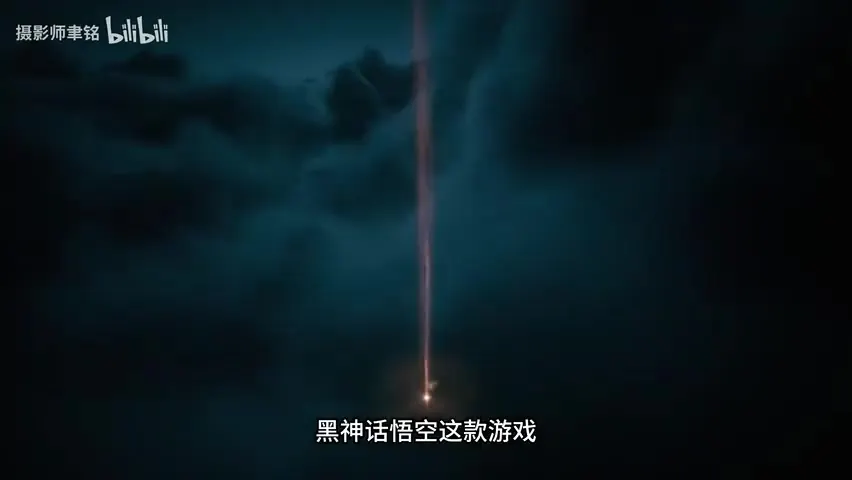 参考截图 01｜00:09 | 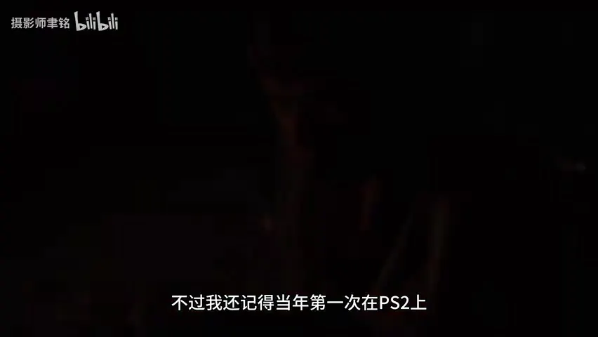 参考截图 02｜00:21 |
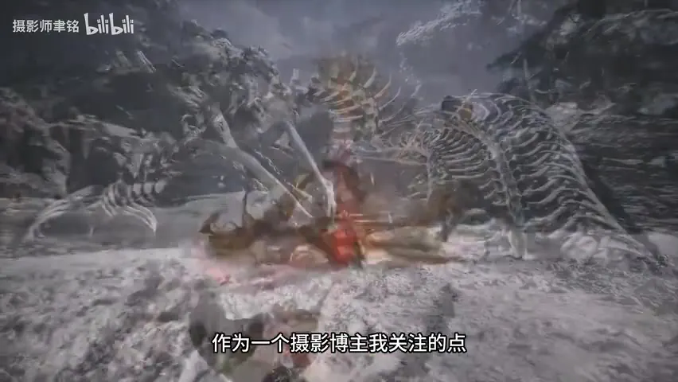 参考截图 03｜00:33 | 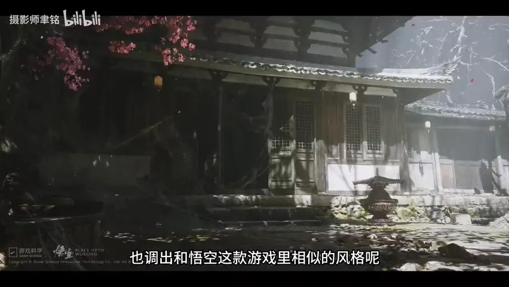 参考截图 04｜00:45 |
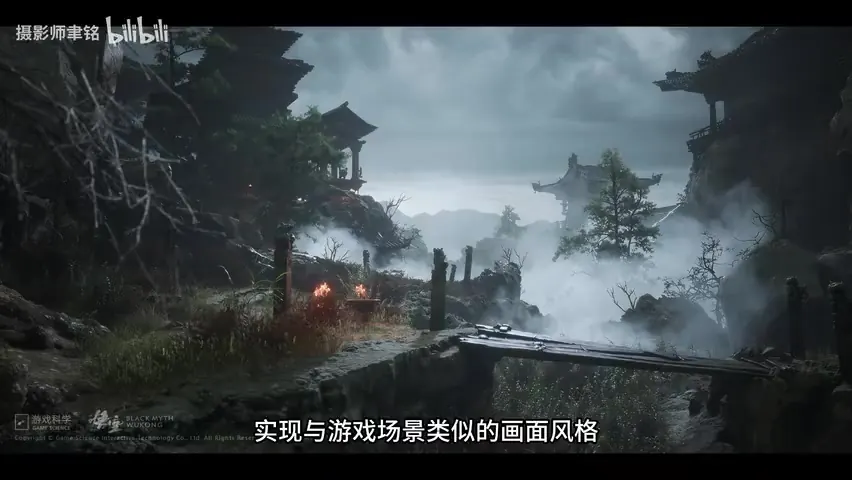 参考截图 05｜00:57 | 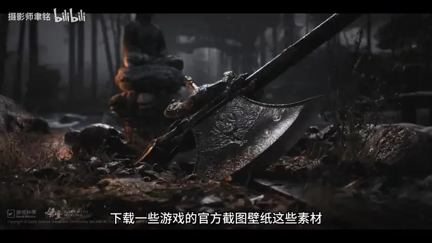 参考截图 06｜01:08 |
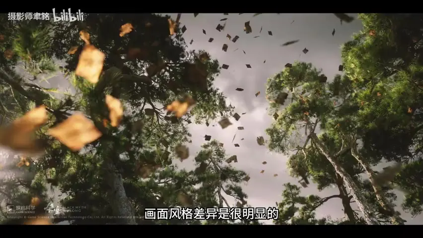 参考截图 07｜01:20 | 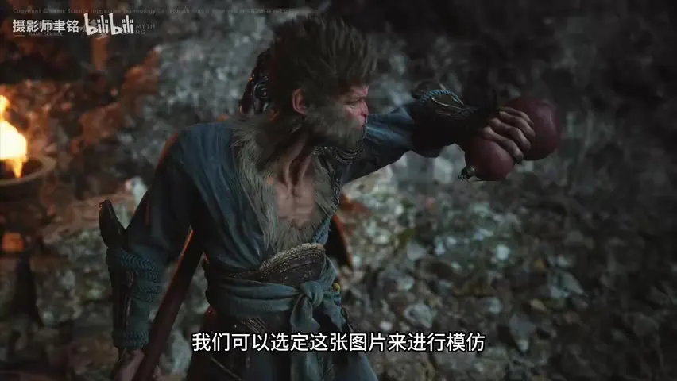 参考截图 08｜01:32 |
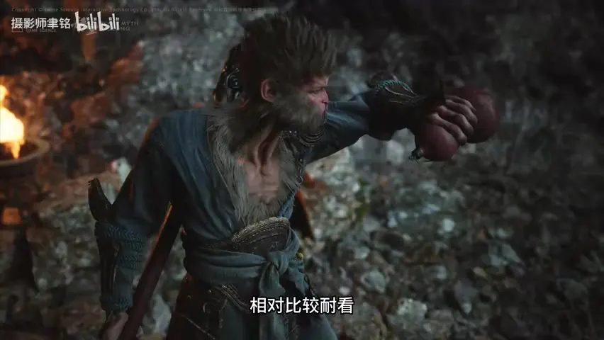 参考截图 09｜01:44 | 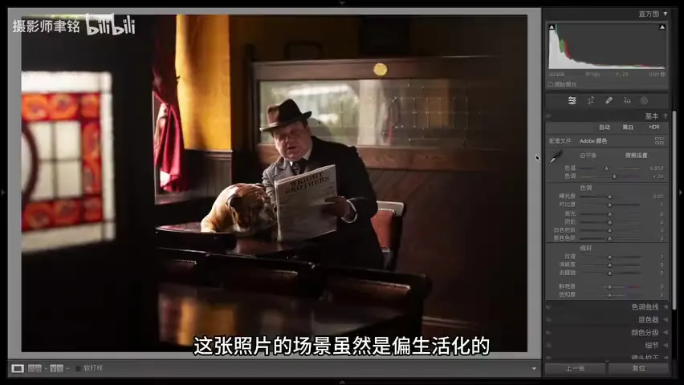 参考截图 10｜01:56 |
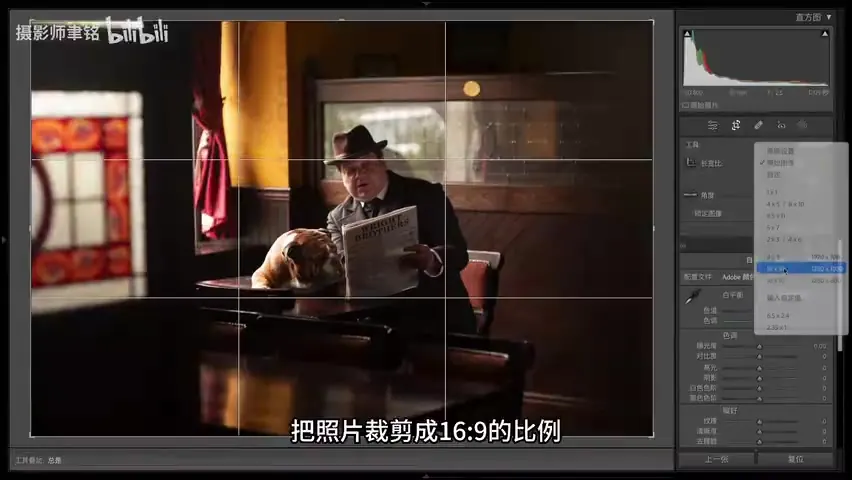 参考截图 11｜02:08 |
参考截图 12｜02:20 |
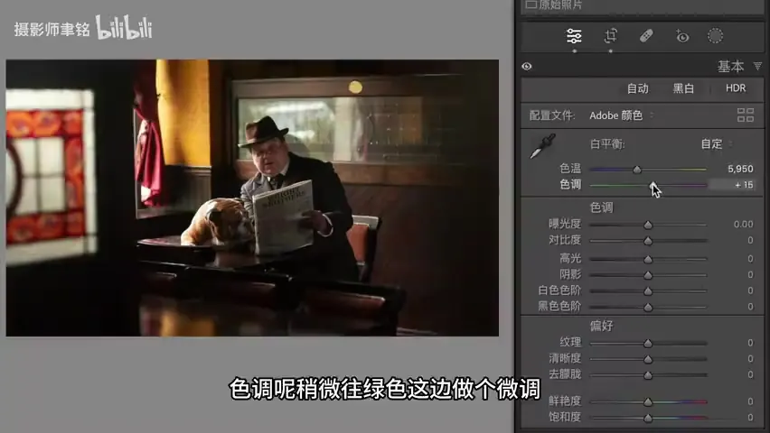 参考截图 13｜02:32 | 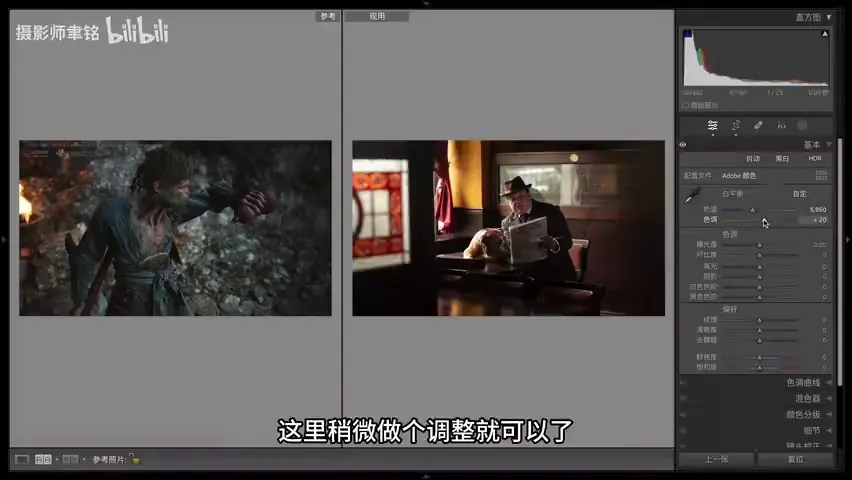 参考截图 14｜02:44 |
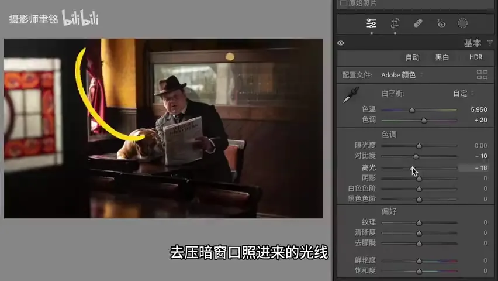 参考截图 15｜02:56 | 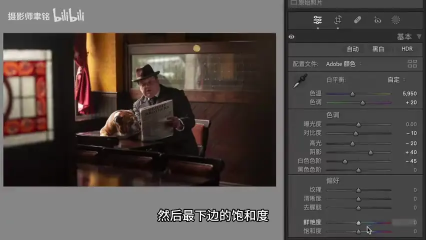 参考截图 16｜03:08 |
|
参考截图 17｜03:20 | 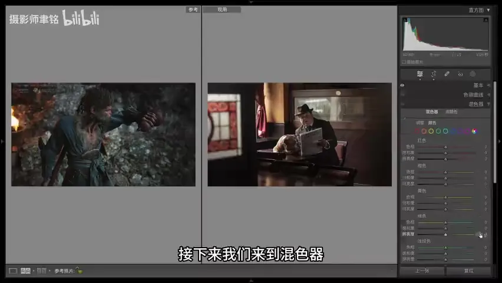 参考截图 18｜03:32 |
一页速览
风格目标 | 围绕“黑神话悟空暗黑风调色”建立一套可复盘的观察和调色流程。 |
观察顺序 | 先看参考图与素材是否匹配，再看直方图和明暗关系，最后拆肤色、环境色、冷暖关系。 |
操作顺序 | 基础面板定亮度与反差，曲线塑造影调，HSL/混色器处理主色，颜色分级/校准统一氛围，局部工具收尾。 |
学习重点 | 不要只记参数；每一步都要对应画面问题，例如偏黄、过曝、肤色脏、暗部死黑、背景颜色杂乱等。 |
学习目标
能从参考截图中判断目标风格的题材、光线、影调和主色倾向。
能把视频里的滑块操作翻译成“解决什么画面问题”的思路。
能用基础面板、曲线、HSL、校准、颜色分级和局部调整完成一轮完整复盘。
能把同一套方法迁移到自己的照片，并根据素材差异微调而不是硬套数值。
能用前后对比、直方图和参考图同屏检查最终结果是否接近目标风格。
视频要点提炼
时间 | 类型 | 内容摘记 |
02:20 | 关键讲解 | 去观察参考图 |
02:34 | 关键讲解 | 我们看左边的参考图 |
02:46 | 关键讲解 | 对比度可以降低一点 |
02:48 | 关键讲解 | 那么降低对比度 |
02:52 | 关键讲解 | 高光和白色色节 |
02:58 | 关键讲解 | 不然这部分的高光 |
03:02 | 关键讲解 | 阴影可以适当的去提亮一些 |
03:08 | 关键讲解 | 然后最下面的饱和度 |
03:12 | 关键讲解 | 参考图它的整体 |
03:12 | 关键讲解 | 它还是偏低饱和的对不对 |
03:58 | 关键讲解 | 饱和度和明亮度 |
04:08 | 关键讲解 | 把它的饱和度和明亮度 |
Lightroom 复盘流程
参考图观察：先截取作品参考、原图与成片对比，判断画面属于清新、胶片、电影感、夜景、街拍、人像或风光中的哪一种。
基础面板：调整曝光、对比、高光、阴影、白色和黑色，让素材进入可调状态；这一步解决明暗和层次，不急着追求最终颜色。
曲线塑形：用曲线控制黑白端、中间调和整体反差；胶片感通常会抬黑或压白，电影感常强调暗部和高光的关系。
颜色控制：用 HSL/混色器拆解肤色、天空、绿植、衣服和背景；重点只动影响画面的主色，不把所有颜色都调一遍。
统一氛围：用校准、颜色分级、色温色调和少量局部工具统一冷暖关系，让画面不散、不脏、不互相打架。
局部收尾：处理脸部、天空、窗口、高光边缘、暗部噪点和主体突出度，最后和参考图同屏复查。
关键截图与讲解
图 01 | 00:26 | 关键画面
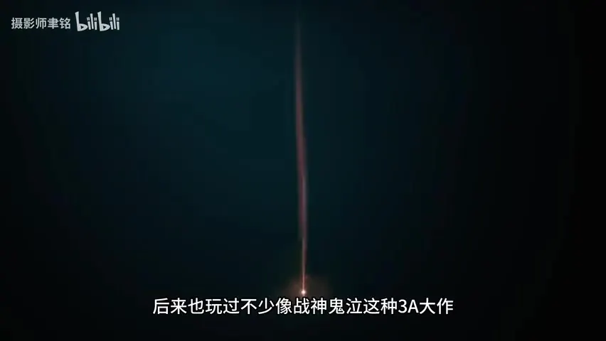
学习要点：懂思路的调色才有灵魂
图 02 | 00:45 | 关键画面
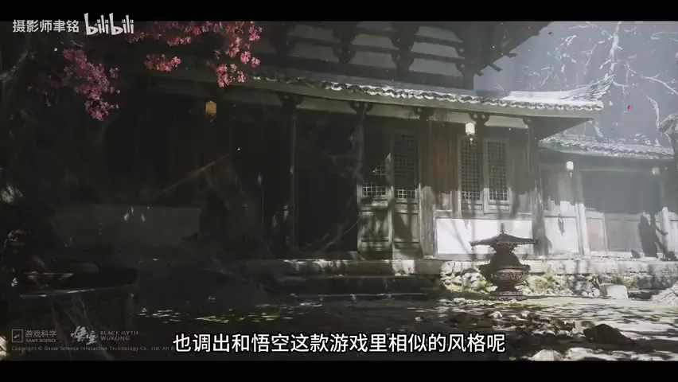
学习要点：懂思路的调色才有灵魂
图 03 | 01:03 | 关键画面
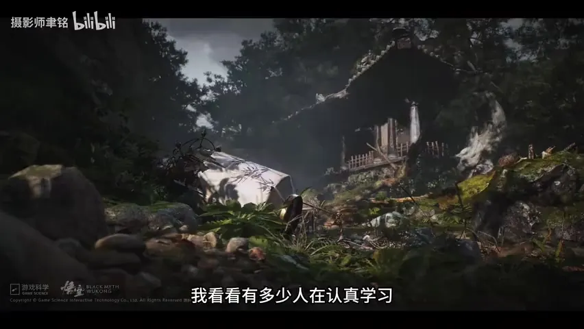
学习要点：懂思路的调色才有灵魂
图 04 | 01:21 | 关键画面
学习要点：懂思路的调色才有灵魂
图 05 | 01:40 | 关键画面
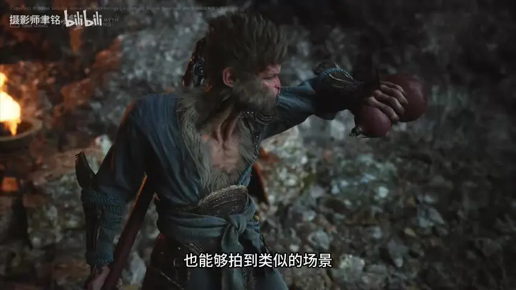
学习要点：懂思路的调色才有灵魂
图 06 | 01:58 | 关键画面
学习要点：懂思路的调色才有灵魂
图 07 | 02:16 | 关键画面
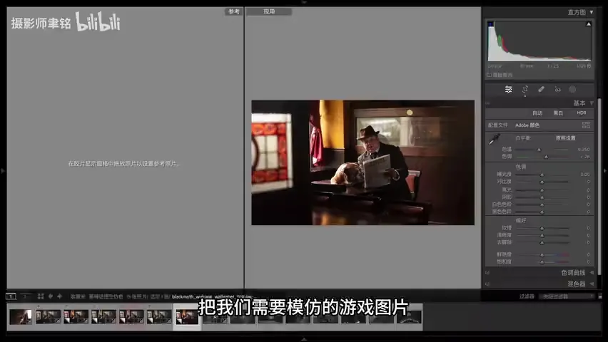
学习要点：懂思路的调色才有灵魂
图 08 | 02:34 | 关键画面
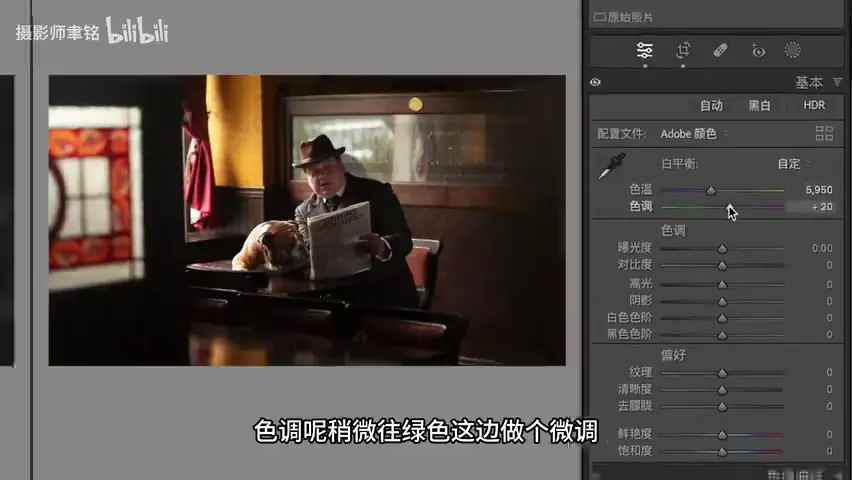
学习要点：懂思路的调色才有灵魂
图 09 | 02:53 | 关键画面
学习要点：懂思路的调色才有灵魂
图 10 | 03:11 | 关键画面
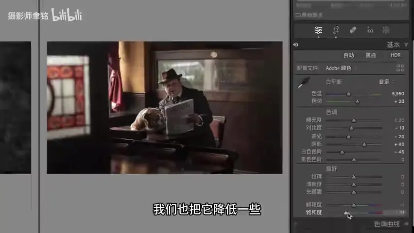
学习要点：懂思路的调色才有灵魂
图 11 | 03:29 | 关键画面
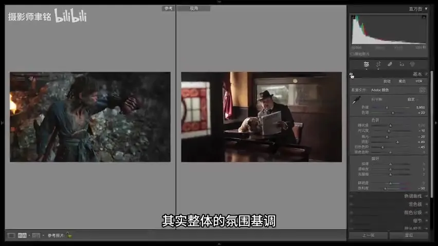
学习要点：懂思路的调色才有灵魂
图 12 | 03:47 | 关键画面
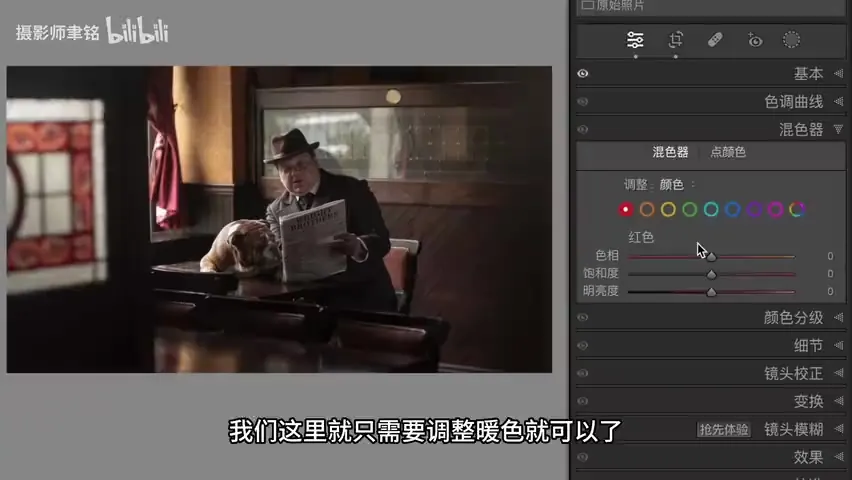
学习要点：懂思路的调色才有灵魂
图 13 | 04:06 | 关键画面
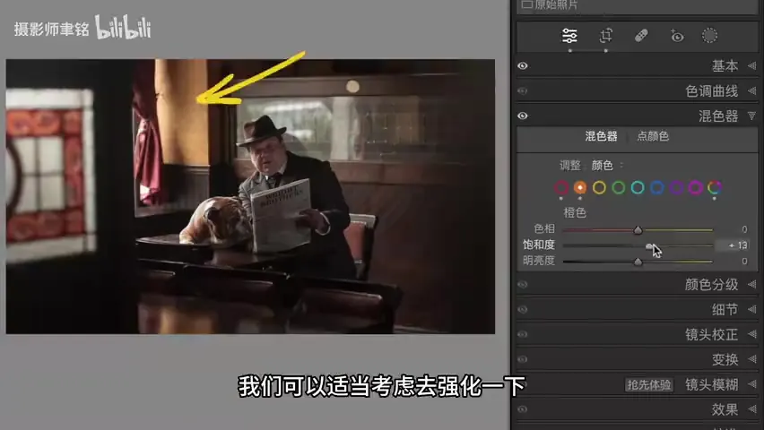
学习要点：懂思路的调色才有灵魂
图 14 | 04:24 | 关键画面
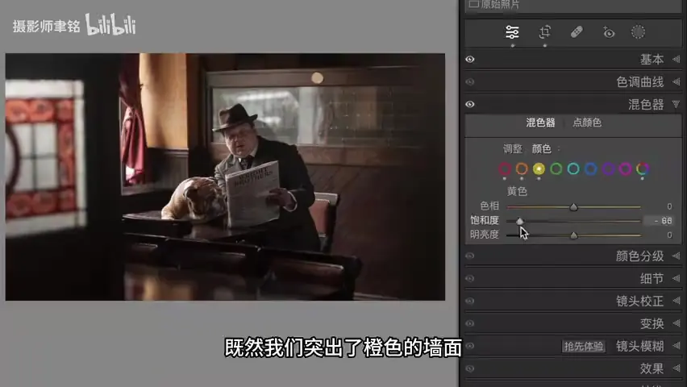
学习要点：懂思路的调色才有灵魂
图 15 | 04:42 | 关键画面
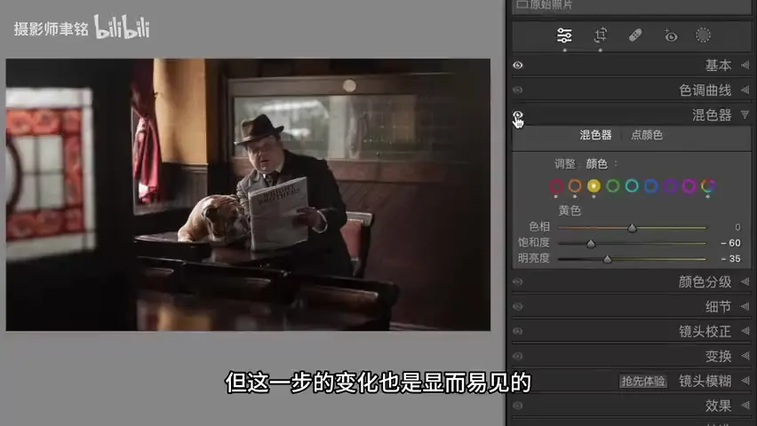
学习要点：懂思路的调色才有灵魂
图 16 | 05:01 | 关键画面
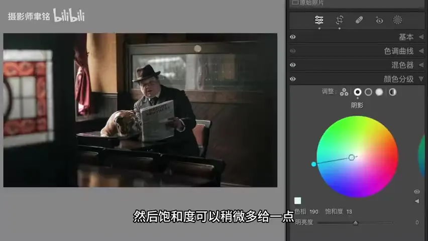
学习要点：懂思路的调色才有灵魂
图 17 | 05:19 | 关键画面
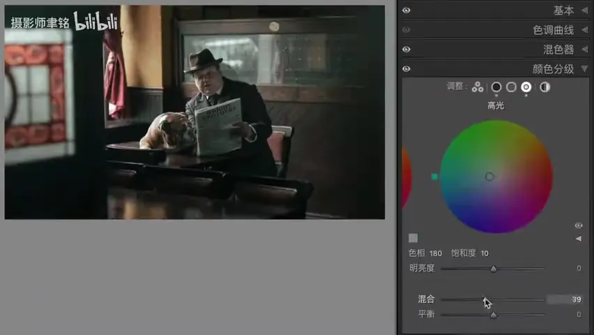
学习要点：懂思路的调色才有灵魂
图 18 | 05:37 | 关键画面
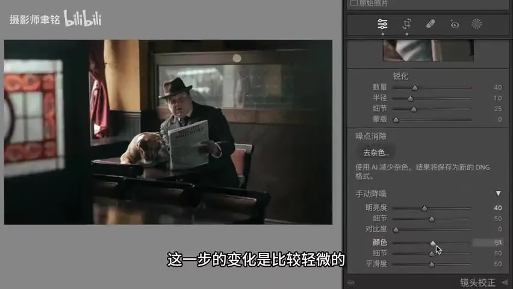
学习要点：懂思路的调色才有灵魂
图 19 | 05:55 | 关键画面
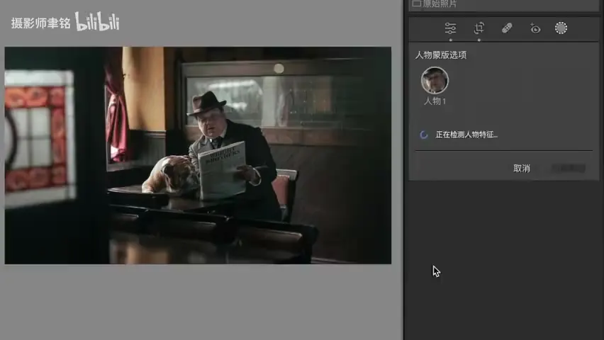
学习要点：懂思路的调色才有灵魂
图 20 | 06:14 | 关键画面
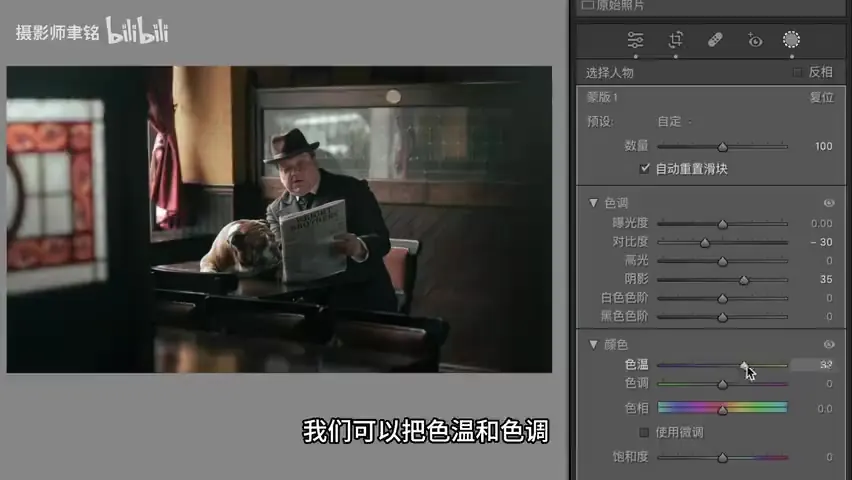
学习要点：懂思路的调色才有灵魂
图 21 | 06:32 | 关键画面
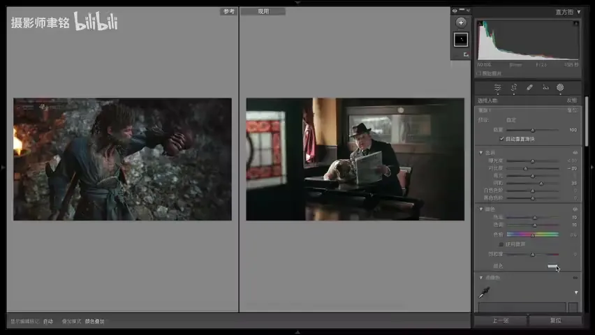
学习要点：懂思路的调色才有灵魂
图 22 | 06:50 | 关键画面
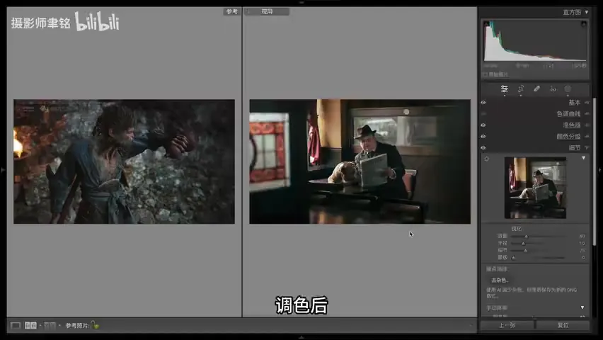
学习要点：懂思路的调色才有灵魂
练习任务
找一张和《追色手记32》题材接近的照片，先写下目标风格的三个关键词。
截取 3-5 张参考图，同屏观察肤色、暗部、高光和背景色，不先动参数。
只用基础面板完成第一版，确认曝光、高光、阴影和黑白场没有明显问题。
用曲线建立主要影调，再用 HSL/混色器处理最重要的 2-3 个颜色。
完成后把原图、成片、参考图并排检查，记录最有效的三个操作。
复盘清单
检查项 | 通过标准 |
参考匹配 | 题材、光线和拍摄场景与参考风格足够接近。 |
影调 | 暗部、高光、中间调关系明确，不是单纯拉亮或压暗。 |
肤色 | 肤色符合风格方向，同时不发脏、不偏灰、不失真。 |
环境色 | 背景颜色统一，主色明确，杂色被压住。 |
质感 | 清晰度、纹理、降噪、颗粒和暗角符合目标气质。 |
迁移 | 换一张同组照片后，只需微调曝光和局部即可成立。 |
时间轴速查
时间 | 模块 | 重点 |
00:00-00:55 | 模块 1 | 懂思路的调色才有灵魂；各位朋友大家好；我是摄影师郁明 |
00:55-01:50 | 模块 2 | 实现与这个游戏；场景类似的一个画面风格；准备好开始学习了吗 |
01:50-02:45 | 模块 3 | 自己动手来练一练；我们选择这张照片；来进行调色 |
02:45-03:40 | 模块 4 | 对比度可以降低一点；画面的光比是偏大的；那么降低对比度 |
03:40-04:36 | 模块 5 | 或者说冷色调；它都不是这样主要的地位；因此我们这里 |
04:36-05:31 | 模块 6 | 我们就不需要去做任何的调整了；虽然我们只调整了三个暖色；但这一步的变化是显而易见的 |
05:31-06:26 | 模块 7 | 可以稍微进行一个手动降噪；和去除杂色的处理；那么这一步的变化是比较轻微的 |
06:26-07:21 | 模块 8 | 加一点偏红的颜色；让皮肤稍稍有点偏红润的感觉；偏红润的感觉 |
全部图片
本页共保留 40 张来自 Word 的图片。上方正文中已按文档顺序展示，这里作为总览索引。